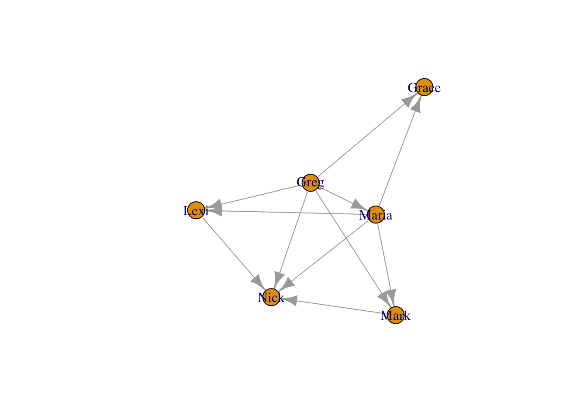

Chapter 2 네트워크 데이터 구조 이해하기 (Understanding network data structures)
2.1 네트워크 데이터란?
점과 선으로 이어진 구조
- 점: node, vertex, point, actor
- 선: link, edge, line, tie
모든 네트워크는 ’관계’에 관한 것이다. 네트워크는 여려 영향을 만들어 낸다.
네트워크 자료와 그에 대한 분석은 이제까지 개체의 속성에 주목한 데이터와 그에 대한 분석이 놓친 영역을 탐구할 수 있다.
ex) 행복 결정 요인 연구
- 기존: 소득, 교육 수준, 자기 효능감 등 개인에게 귀속되는 속성으로 분석
- 네트워크 분석: 행복이 네트워크를 따라 전파되며, 네트워크를 통해 연결된 타인의 행복이 나의 행복의 영향을 미침(ex. 친구의 친구가 행복하면, 나도 행복할 가능성이 커짐)
두 가지 네트워크 효과: 관계적 접근(relational approach) vs 위치적 접근(positional approach)
- 관계적 접근: 직접 연결이 미치는 영향에 주목
- 위치적 접근: 네트워크 구조에서 지위가 만들어내는 역할 주목
네트워크 정보를 파악하는 관점 세 가지
- 전체 네트워크 수준: 밀도, 디그리 분포, 이행성, 글로벌 클러스터링 계수 등
- 노드 수준: 중심성, 지위와 관련된 측정치들(isolate, bridge 등)
- 링크 수준 혹은 두 개의 노드쌍 수준: 링크 가중치 등
기본적으로 네트워크 분석에서 관계는 edge lists(엣지 리스트) 또는 adjacency matrices(인접행렬) 형태로 표현할 수 있다.
2.2 엣지 리스트 (Edge lists)
네트워크 표현법 1. 에지 리스트 - edges 를 나열하여 표현
Edge lists는 컴퓨터에게 각 edge로 연결되어 있는 행위자들이 누군지를 알려준다. 방향성이 있는 네트워크(directed graph)에서는 A 열의 행위자들이 연결을 주는 주체이며, B 열의 행위자들은 연결 받는 대상이다. 한편, 방향성이 없는 네트워크(undirected graph)에서 열의 순서는 상관 없다.
R에서 edge lists를 만들어 보자. 먼저 열 벡터(column vectors)를 정의하고, 정의한 열 벡터들을 데이터 프레임의 변수로 만들어 주면 된다.
personA <- c("Mark", "Mark", "Peter", "Peter", "Bob", "Jill")
personB <- c("Peter", "Jill", "Bob", "Aaron", "Jill", "Aaron")
edgelist <- data.frame(PersonA = personA, PersonB = personB, stringsAsFactors = F)
print(edgelist)## PersonA PersonB
## 1 Mark Peter
## 2 Mark Jill
## 3 Peter Bob
## 4 Peter Aaron
## 5 Bob Jill
## 6 Jill AaronEdge list는 네트워크를 표현하는 아주 간단한 방법이지만, 두 가지 단점이 있다.
첫 번째, edge lists로는 어디에도 연결되지 않은 노드(고립노드/isolates)를 표현할 수 없다.
두 번째, 수학적 계산에 용이한 데이터 형태가 아니다. 따라서 네트워크 분석을 위해서는 edge list를 인접행렬(adjacency matrix) 또는 네트워크 객체(network object)로 변환해야 한다.
2.3 인접행렬(Adjacency matrices)
인접행렬의 각 행과 각 열은 노드(행위자)를 의미하며, 각 요소는 0 또는 1 이상의 정수 값을 갖는다. 예를 들어, 인접행렬의 1번째 행과 1번째 열에 해당하는 (1,1) 자리의 요소가 0이라면, 두 행위자가 네트워크에서 연결되지 않았음을 의미한다.
먼저, 5 X 5 인접행렬을 만들어 보자. 이때 행(row)과 열(column) 차원의 이름(row names, column names)을 2차원 리스트로 지정해주자.
adjacency <- matrix(c(0,1,0,1,0,1,0,1,0,1,0,1,0,1,0,1,0,1,0,1,0,1,0,1,0), nrow = 5, ncol = 5, dimnames = list(c("Mark", "Peter", "Bob", "Jill", "Aaron"), c("Mark", "Peter", "Bob", "Jill", "Aaron")))
print(adjacency)## Mark Peter Bob Jill Aaron
## Mark 0 1 0 1 0
## Peter 1 0 1 0 1
## Bob 0 1 0 1 0
## Jill 1 0 1 0 1
## Aaron 0 1 0 1 0- 밀도(Density): 실제로 존재하는 링크의 비율(가능성에 비해)
- 한 네트워크의 링크 개수를 최대로 가능한 링크 개수의 총합으로 나눈 값
- 평균 디그리/노드 숫자
- 디그리(Degree): 어떤 노드가 다른 노드에 대해 가지는 링크의 숫자
- 방향이 있는 그래프에서는 in-degree와 out-degree가 나뉨
- 모든 노드의 디그리를 합치면, 링크 숫자의 두 배가 됨
- 방향이 있는 그래프에서는 in-degree와 out-degree가 나뉨
- Weighted Networks(Valued Networks)
- 링크가 있고 없고를 넘어서, 링크가 강도를 가질 수 있음
- 소셜 네트워크에서 행위자 간 접촉 빈도 등을 가중치로 설정할 수 있음
- 앞서 존재한 인접행렬 매트릭스(Adjacency Matrix)로 표현 가능함. 입력 값이 0/1 두 개의 값이 아니라 다양한 값으로 표현됨(음수를 활용하는 경우도 있음)
- 링크가 있고 없고를 넘어서, 링크가 강도를 가질 수 있음
- Directed Networks
- 링크에 방향이 존재할 수 있음
- 앞선 네트워크들에서는 인접 매트릭스가 대칭 행렬이었음(방향이 없기 때문)
- 방향을 가정할 때에는, A(i,j)와 A(j,i)가 다른 의미를 가짐. A(i,j)는 j로부터 i로 향하는 링크의 존재를 의미함(해석 주의!)
- 약간 반직관적 설정이나, 여러 지표 계산에 최적화된 세팅임
- 링크에 방향이 존재할 수 있음
2.4 데이터에서 네트워크로 (From data to networks)
R의 igraph 패키지는 네트워크를 시각화하는데 사용된다. 우선 igraph 패키지를 설치하고, igraph를 작업 공간에 불러오자.
# install.packages("igraph", repos='http://cran.us.r-project.org')
library(igraph)먼저 실습에 필요한 edge list를 만들어 보자.
채무 관계를 표현하는 edge list를 만들 것이다. Ego는 돈을 꿔준 사람, Alter는 돈을 받은 사람으로 하겠다. Ego 열 벡터와 Alter 열 벡터를 각각 만든 후, data.frame() 함수를 통해 데이터프레임 형태로 만든다. Ego와 Alter는 따라서 데이터프레임의 변수 명이 된다. 이렇게 만든 데이터프레임을 money_edgelist라는 이름으로 저장하자.
money_edgelist <- data.frame(
Ego = c("Greg","Greg","Greg","Greg","Greg","Maria","Maria","Maria","Maria","Mark","Lexi"),
Alter = c("Maria","Mark","Lexi","Grace","Nick","Mark","Lexi","Grace","Nick","Nick","Nick")
)
money_edgelist## Ego Alter
## 1 Greg Maria
## 2 Greg Mark
## 3 Greg Lexi
## 4 Greg Grace
## 5 Greg Nick
## 6 Maria Mark
## 7 Maria Lexi
## 8 Maria Grace
## 9 Maria Nick
## 10 Mark Nick
## 11 Lexi Nick이제 igraph 패키지를 사용하여 간단한 네트워크 분석을 해보자. igraph 패키지는 행렬만을 input으로 받는다. 따라서 데이터프레임을 행렬로 바꿔주어야 한다.
money_edgelist <- as.matrix(money_edgelist)
money_edgelist## Ego Alter
## [1,] "Greg" "Maria"
## [2,] "Greg" "Mark"
## [3,] "Greg" "Lexi"
## [4,] "Greg" "Grace"
## [5,] "Greg" "Nick"
## [6,] "Maria" "Mark"
## [7,] "Maria" "Lexi"
## [8,] "Maria" "Grace"
## [9,] "Maria" "Nick"
## [10,] "Mark" "Nick"
## [11,] "Lexi" "Nick"igraph 패키지의 graph.edgelist() 함수를 통해 edge list를 네트워크 객체(network object)로 바꿀 수 있다. 이 함수에는 네트워크 데이터(=edge list)와 이 네트워크가 방향성이 있는지 없는지 여부가 인자(argument)로 들어간다. 우리의 채무 네트워크의 경우 Ego에서 Alter로의 방향성이 있다.
moneyNetwork <- graph.edgelist(money_edgelist, directed=TRUE)igraph 패키지를 통해 modey_edgelist 데이터를 moneyNetwork라는 네트워크 객체로 바꿔주었다.
그렇다면 인접행렬의 경우는 어떻게 네트워크 객체로 바꿀 수 있을까? 인접행렬은 igraph 패키지의 graph.adjacency() 함수를 통해 네트워크로 바꿔주면 된다.
# 참고
graph.adjacency(adjacency, mode = "undirected")## IGRAPH 0a6d626 UN-- 5 6 --
## + attr: name (v/c)
## + edges from 0a6d626 (vertex names):
## [1] Mark --Peter Mark --Jill Peter--Bob Peter--Aaron Bob --Jill
## [6] Jill --Aaron2.5 네트워크 탐색하기 (Exploring the network)
이제 네트워크의 각각의 요소들이 무엇을 의미하는지 알아보자. 아까 만든 moneyNetwork를 입력하면 네트워크의 summary가 출력된다.
moneyNetwork## IGRAPH 0a65b66 DN-- 6 11 --
## + attr: name (v/c)
## + edges from 0a65b66 (vertex names):
## [1] Greg ->Maria Greg ->Mark Greg ->Lexi Greg ->Grace Greg ->Nick
## [6] Maria->Mark Maria->Lexi Maria->Grace Maria->Nick Mark ->Nick
## [11] Lexi ->NickIGRAPH DN 으로 시작하는 맨 첫 줄은 moneyNetwork가 igraph object이고, 방향성이 있는 네트워크 (directed network)이며, 6개의 노드와 11개의 에지로 구성되었음을 알려준다.
두 번째 줄은 moneyNetwork가 노드(vertices, v/c)의 이름(name)을 특성(attribute)으로 가지고 있음을 알려준다. 따라서 우리는 네트워크의 name 특성을 따로 뽑아낼 수 있다. 네트워크의 특성을 뽑아낼 때에는 V()$ 를 사용한다.
V(moneyNetwork)$name## [1] "Greg" "Maria" "Mark" "Lexi" "Grace" "Nick"summary의 첫 번째 줄에서 봤듯이, 이 네트워크의 노드는 총 6개가 있었고, 각 노드의 이름이 특성으로 저장되어 있다.
다음으로, 세 번째 줄은 네트워크의 edges의 snapshot을 보여준다.
plot() 함수를 사용하면 전체 네트워크를 시각화할 수 있다.
plot(moneyNetwork)
디폴트 그래프는 못 생겼다…다음 장에서 네트워크 시각화에 대해 더 배워보자.